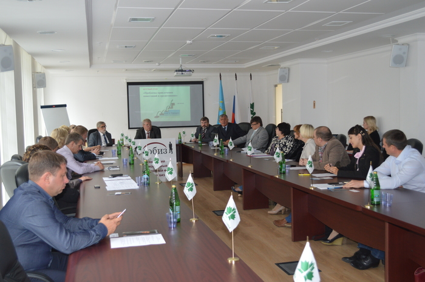
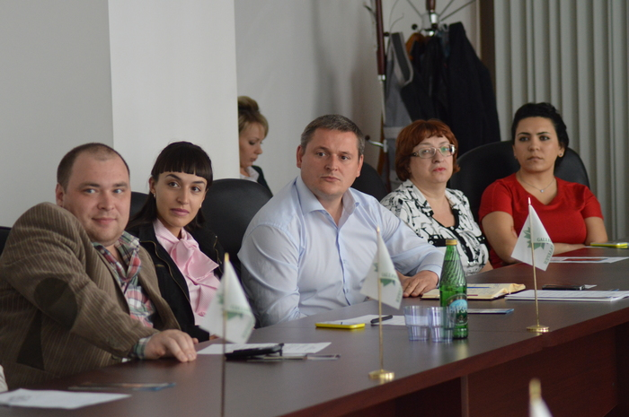

Проблемы привлечения инвестиций и кредитование

3 сентября Тамбовский региональный общественный фонд содействия бизнесу провел круглый стол на тему: «Проблемы привлечения инвестиций и кредитование».
На круглом столе обсудили проблемы, связанные с привлечением инвестиций, в том числе государственных и с кредитованием малого и среднего бизнеса.

Участия в круглом столе приняли представители органов государственной власти и местного самоуправления, инвестиционных, консалтинговых и кредитных организаций, ученые и преподаватели вузов области, представители бизнес-сообщества, так же в круглом столе принял участие директор Тамбовского областного ГУП «Фонд содействия кредитованию малого и среднего предпринимательства Тамбовской области» Андрей Блудов.